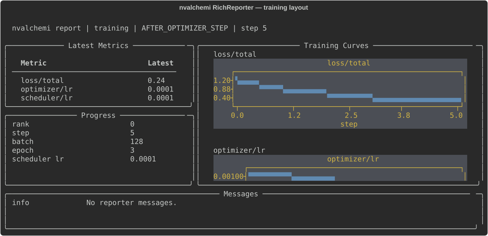
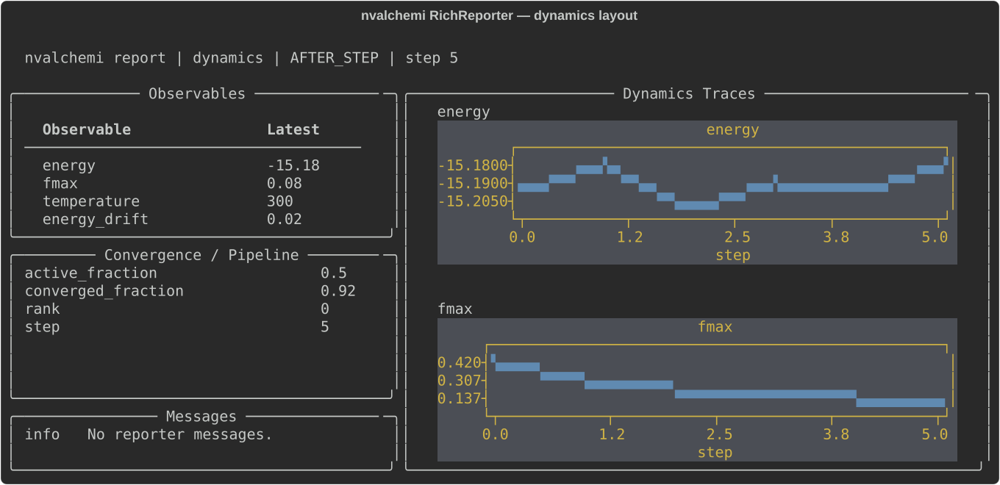

Reporting#
Training runs and dynamics simulations both produce a constant stream of structured data: loss components, learning rates, gradient norms, energy trajectories, convergence fractions. Watching those numbers tells you whether a run is healthy, whether it is worth continuing, and whether a change made things better or worse. The problem is that wiring each metric into the lifecycle by hand — a hook per metric, one per backend — quickly becomes its own maintenance burden.
Reporting solves this at the layer above individual hooks. Register a single
ReportingOrchestrator and tell it which lifecycle
stages and output backends you want. At each matching event it collects scalars
from the hook context, assembles a structured payload, handles rank reduction,
and fans the result out to every configured reporter. Training code does not
change when you add, remove, or replace a backend.
The design is deliberately minimal on the reporter side. The
Reporter protocol requires one method —
report(ctx, stage, state). That is enough to write a CSV exporter, a W&B
integration, a custom dashboard, or any other sink. The built-in reporters —
TensorBoardReporter and
RichReporter — satisfy the same protocol as a
custom one would, so switching or extending is a matter of swapping objects.
Reporting versus logging#
Logging and reporting have different intent, and the distinction helps you choose the right tool for each output.
Logging captures a direct stream of events — per-batch rows, per-graph
observables, gradient statistics — in a form you can replay or audit after
the run. Each record corresponds to one event and contains whatever that event
produced. The built-in LoggingHook for dynamics works this way: it writes one
row per system per step with energy, fmax, temperature, and status counts.
Reporting produces curated summaries. A reporter receives the hook context at a chosen cadence, decides which scalars to extract, optionally reduces them across ranks, and renders or serializes the result. Detail that does not belong in a summary is intentionally dropped. The output is a compact dashboard or analysis record, not a raw event log and so the interpretation would be reporting provides insight, whereas logging just provides data. The logger vs. reporter abstraction is backend agnostic, and so writing to CSV could be done by either, however if you need to communicate between ranks, or do some post-processing of the values, then write and use a reporter. More concretely, a reporter or a logger could write to a CSV file, but in the latter case each rank could write their own metrics asynchronously, while the former would provide the ability to reduce the metrics across all workers.
How reporting works#
ReportingOrchestrator is a standard hook — it
goes in hooks=[...] alongside everything else. The role of the orchestrator
is to act with the requested cadence on each provided reporter:
Updates shared
ReportingStatewith an event count, timestamps, and a bounded recent-message buffer.Applies rank-zero gating for reporters that request it.
Calls each reporter with
(ctx, stage, state).Applies the configured error policy if a reporter raises.
Reporting orchestrator flow, from workflow to output.#
Each reporter calls collect_scalars() to build a
ScalarSnapshot — a frozen payload containing the
stage name, wall-clock timestamp, elapsed time, event and step counters, rank,
training epoch and batch metadata, and a flat dictionary of scalar values. Keys
use slash-separated paths:
loss/total,loss/{component}/unweighted,loss/{component}/weight— from a composed lossoptimizer/0/lr,scheduler/0/lr— learning rates from configured optimizers and schedulerstraining/progress_fraction,training/eta_s,training/steps_per_s— workflow progress and throughput (when available)energy,fmax,temperature,converged_fraction— dynamics observables when enabled
For distributed runs, all ranks independently collect their own scalar snapshot. What changes per-reporter is what happens after collection:
requires_all_ranks = True— all ranks participate in a collective reduction (mean, sum, min, or max). Once reduced, only rank zero callsreporter.report()with the merged snapshot; nonzero ranks return without writing.rank_zero_only = True— no reduction occurs. The orchestrator callsreporter.report()only on rank zero; nonzero ranks are skipped entirely.Neither flag set — each rank calls
reporter.report()independently with its own local snapshot.
Set requires_all_ranks when the output needs cross-rank agreement — a global
mean loss, total throughput across all GPUs. Set rank_zero_only when
independence is acceptable and parallel writes to the same destination must be
avoided.
Distributed reporting: per-rank collection, reduction, and rank-zero write.#
Getting started#
The minimal setup is one orchestrator with the reporters you want. Both built-in reporters can be active at the same time and receive the same scalar payload independently:
from nvalchemi.hooks import ReportingOrchestrator, RichReporter, TensorBoardReporter
from nvalchemi.training import TrainingStrategy
reporting = ReportingOrchestrator(
[
TensorBoardReporter("runs/my-experiment"),
RichReporter(),
],
stages={"AFTER_OPTIMIZER_STEP"},
frequency=10,
)
strategy = TrainingStrategy(
...,
hooks=[reporting],
)
stages controls which lifecycle stages trigger a report. The default is
{"AFTER_OPTIMIZER_STEP", "AFTER_STEP"}, which covers both training and
dynamics workflows. Override it when you want reports at a different cadence
— for example, {"AFTER_EPOCH"} for epoch-level summaries only.
frequency throttles reporting to every N events at the configured stages.
For a long run where reporting every optimizer step adds unnecessary overhead,
frequency=10 or higher keeps the output readable without missing trends.
error_policy controls what happens if a reporter raises. The default is
ReportingErrorPolicy.RAISE. Set it to "warn" or "ignore" when a broken
reporter should not abort the run:
from nvalchemi.hooks import ReportingErrorPolicy, ReportingOrchestrator
reporting = ReportingOrchestrator(
reporters=[...],
stages={"AFTER_OPTIMIZER_STEP"},
frequency=10,
error_policy="warn",
)
Built-in reporters#
TensorBoardReporter#
Use TensorBoardReporter when you want persistent,
replayable training curves — for comparing runs, archiving results, or
post-hoc analysis with TensorBoard’s UI or any tool that reads event files.
from nvalchemi.hooks import TensorBoardReporter
reporter = TensorBoardReporter(
"runs/my-experiment",
tag_prefix="train", # prepended to all tags: "train/loss/total", etc.
flush=True, # flush after every event
)
Each reporting event writes one scalar per key in the snapshot using the step
count as the global step. Keys become TensorBoard tags directly: loss/total,
optimizer/0/lr, training/progress_fraction, and so on. The writer
initializes lazily on the first event, so constructing the reporter before the
run starts is safe.
For distributed runs, set rank_reduction to control how scalars are combined
before rank zero writes them. When None (the default), each rank writes
independently. Pass "mean" or "sum" to reduce across all ranks — all ranks
must report the same scalar keys when reduction is enabled.
TensorBoardReporter requires tensorboard to be installed. Construction
raises if the dependency is missing.
RichReporter#
Use RichReporter when you want to watch a run in
progress. It renders scalar snapshots as a live terminal dashboard using Rich’s
Live display, showing loss curves, learning rates, throughput, and ETA in
real time without checking a file or browser.
from nvalchemi.hooks import RichReporter
reporter = RichReporter(
layout="training", # built-in layout; see below for options
history_size=200, # (step, value) points retained per metric
precision=6, # significant digits in the latest-value table
refresh_per_second=2.0,
)
The layout parameter controls which dashboard surface is rendered. Pass
"training" for a training-focused view, "dynamics" for a dynamics
simulation view, None for automatic selection based on the first context
received, or a custom RichLayout object to build your own surface. Layout
design is covered in detail in Designing Rich layouts.
plot_keys, max_plots, and plot_height control which metrics get
time-series panels and how large those panels are. rank_reduction,
custom_scalars, include_losses, and include_optimizer_lrs behave the
same as for TensorBoardReporter.
You can preview any layout without running a workflow:
RichReporter.preview(layout="training", title="training dashboard")
RichReporter.preview(layout="dynamics", title="dynamics dashboard")
Those two calls render the dashboards below. Both share the same skeleton — a
column of at-a-glance value panels on the left, time-series plots on the right,
and a Messages panel for reporter output — and differ in what they choose to
put in each slot:
|
|
|
|---|---|---|
Value panels |
|
|
Plot panel |
|
|
Plotted by default |
|
|
Question it answers |
Is the loss coming down, and how long is left? |
Is the simulation healthy, and how much of the batch has converged? |
The "training" layout leads with the loss breakdown, learning rates, and
progress/ETA — the things you watch to decide whether a run is worth continuing:
{kind=link}

The built-in "training" layout, rendered by
RichReporter.preview(layout="training").#
The "dynamics" layout swaps those for simulation observables and a
convergence/pipeline panel, since a batched relaxation is judged on how many
systems have finished rather than on a single scalar going down:
{kind=link}

The built-in "dynamics" layout, rendered by
RichReporter.preview(layout="dynamics").#
Neither is fixed: plot_keys, max_plots, and plot_height retune the plot
panel without writing a layout, and a custom
RichLayout replaces the surface entirely (see
Designing Rich layouts).
For an animated live-data demo using synthetic metrics:
uv run python examples/intermediate/07_rich_training_reporting.py --steps 80 --delay 0.05
Designing Rich layouts#
The terminal dashboard is the most visible reporting surface during a run. A layout that surfaces the right metrics at a glance — loss trajectory, learning rate, convergence fraction, throughput — makes it significantly easier to catch problems early and understand what a run is doing. The layout system is designed so you can build the dashboard that suits your workflow and workstyle: a validation-focused view for fine-tuning, a compact single-metric status bar for debugging, or a fully custom multi-panel surface for complex pipelines.
RichReporter manages everything that is not rendering: the Rich Live
context, scalar collection, history retention, rank filtering, and refresh
cadence. Your layout is a rendering policy — given the current snapshot and
history, return a Rich renderable. It owns no lifecycle, no state, no
distributed logic.
Built-in layouts#
Training layout#
TrainingRichLayout (layout="training") is
optimized for monitoring an active training run. It surfaces:
Latest metrics — a table of current scalars in display order, updated at each reporting event
Progress sidebar — step count, epoch, throughput, and ETA
Training curves — time-series plots for
loss/total, learning rate, and per-component lossesMessages panel — recent reporter messages and warnings
Use "training" for any training or fine-tuning workflow. It automatically
picks up all loss components from a composed loss, learning rates from all
configured optimizers and schedulers, and progress information when the
training context exposes it. Pin it explicitly when you do not want automatic
layout selection from the first context:
reporter = RichReporter(layout="training")
Dynamics layout#
DynamicsRichLayout (layout="dynamics") is
optimized for monitoring a molecular dynamics or geometry optimization
simulation. It surfaces:
Observables — energy,
fmax, temperature, convergence fractionPipeline sidebar — active count, graduated count, per-status breakdown
Dynamics traces — time-series plots for energy,
fmax, temperature, and convergence fractionMessages panel — recent reporter messages and warnings
This layout also sets include_dynamics_scalars = True, which tells
RichReporter to collect default dynamics observables from the context
automatically — without this, energy, temperature, and convergence would not
appear in the snapshot.
reporter = RichReporter(layout="dynamics")
Subclassing BaseRichLayout#
When none of the built-in layouts fits your workflow but you want the same
general structure — header, latest-metric table, time-series plots, messages
panel — subclass BaseRichLayout. The base class
owns the panel structure and Rich rendering; you supply the preferred plot
metrics, panel titles, and preview curves.
from nvalchemi.hooks import BaseRichLayout, RichReporter
class ValidationRichLayout(BaseRichLayout):
def __init__(self) -> None:
super().__init__(
name="validation",
preferred_plot_keys=("validation/loss", "validation/mae"),
latest_title="Validation Metrics",
history_title="Validation Curves",
)
def default_preview_history(self):
return {
"validation/loss": (0.8, 0.62, 0.51, 0.44),
"validation/mae": (0.31, 0.24, 0.19, 0.16),
}
reporter = RichReporter(layout=ValidationRichLayout())
ValidationRichLayout inherits the full BaseRichLayout panel structure — a
table of latest scalars, time-series plots, and a messages panel — but wires it
to validation metrics rather than training ones. Each constructor argument
controls a distinct part of that structure:
name— layout identifier used in log output and error tracespreferred_plot_keys— metrics that get dedicated time-series panels, listed in display order; other scalars appear in the table but not the plotslatest_title/history_title— section headers for the scalar table and the time-series plots region respectivelydefault_preview_history— synthetic(step, value)sequences used byRichReporter.preview()to render a static mock-up without a live run
Override the preview metadata methods when the default training context does not match your workflow. A validation-only layout, for example, may not have a meaningful epoch or batch count:
class ValidationRichLayout(BaseRichLayout):
...
def default_preview_stage(self) -> str:
return "AFTER_VALIDATION"
def default_preview_epoch(self) -> int | None:
return None
def default_preview_batch_count(self) -> int | None:
return None
Set include_dynamics_scalars=True in the super().__init__(...) call if
your workflow also needs dynamics observables in the snapshot.
Once the layout class is defined, pass it as the layout argument to
RichReporter. The layout and reporter are independent — the layout renders;
the reporter owns the Live context, history retention, and refresh cadence:
from nvalchemi.hooks import ReportingOrchestrator, RichReporter
reporter = RichReporter(layout=ValidationRichLayout())
reporting = ReportingOrchestrator([reporter], stages={"AFTER_VALIDATION"})
Implementing RichLayout directly#
When the header-table-plots structure does not fit — a compact single-line
status bar, a side-by-side rank comparison, a custom pipeline-status panel —
implement RichLayout directly. This gives you full
control over the rendered surface while RichReporter still manages everything
else: Live, scalar collection, history retention, rank filtering, and refresh.
The protocol requires five methods and one class attribute:
from nvalchemi.hooks import RichReporter, ScalarSnapshot
from nvalchemi.hooks.reporting.layouts import RichMetricHistory
class CompactLayout:
include_dynamics_scalars = False # True to add dynamics observables
def default_preview_history(self):
return {"my/metric": (1.0, 0.8, 0.6, 0.4)}
def default_preview_stage(self) -> str:
return "AFTER_OPTIMIZER_STEP"
def default_preview_epoch(self) -> int | None:
return 3
def default_preview_batch_count(self) -> int | None:
return 128
def render(
self,
snapshot: ScalarSnapshot | None,
history: RichMetricHistory,
*,
title: str,
precision: int,
max_scalars: int | None,
plot_keys,
max_plots: int,
plot_height: int,
):
... # return a Rich renderable
snapshot is the latest ScalarSnapshot, or
None before the first reporting event — always guard against None. Use
snapshot.scalars for current values, snapshot.messages for recent reporter
messages or warnings. history maps metric keys to sequences of
(step, value) tuples, useful for drawing trend lines or sparklines. The
remaining parameters are display preferences passed through from RichReporter
and controllable by the user at reporter-construction time.
Do not create a nested Rich.Live inside render. RichReporter owns the
Live context; your layout’s job is to return a renderable, nothing else.
The following Rich components cover most layout needs:
Component |
Use |
|---|---|
|
Split the terminal into named regions for independent panels. |
|
Frame a region, table, or group with a title and border. |
|
Show latest scalar values, rank summaries, or pipeline status. |
|
Build styled labels and compact status lines. |
|
Stack multiple renderables inside one layout region. |
|
Arrange small repeated panels, such as per-rank summaries. |
|
Position or pad a renderable without a new region. |
A complete minimal layout that renders all current scalars in a compact table:
from rich import box
from rich.console import Group
from rich.layout import Layout
from rich.panel import Panel
from rich.table import Table
from rich.text import Text
from nvalchemi.hooks import RichReporter, ScalarSnapshot
from nvalchemi.hooks.reporting.layouts import RichMetricHistory
class CompactLayout:
include_dynamics_scalars = False
def default_preview_history(self):
return {"my/metric": (1.0, 0.8, 0.6, 0.4)}
def default_preview_stage(self) -> str:
return "AFTER_OPTIMIZER_STEP"
def default_preview_epoch(self) -> int | None:
return 3
def default_preview_batch_count(self) -> int | None:
return 128
def render(
self,
snapshot: ScalarSnapshot | None,
history: RichMetricHistory,
*,
title: str,
precision: int,
max_scalars: int | None,
plot_keys,
max_plots: int,
plot_height: int,
) -> Layout:
layout = Layout(name="root")
layout.split_column(
Layout(name="header", size=3),
Layout(name="body"),
)
subtitle = Text(
"waiting for metrics" if snapshot is None else snapshot.stage
)
layout["header"].update(
Panel(Group(Text(title), subtitle), box=box.SIMPLE)
)
table = Table(box=box.SIMPLE_HEAD, expand=True)
table.add_column("Metric")
table.add_column("Latest", justify="right")
if snapshot is None:
table.add_row("(waiting)", "")
else:
for key, value in sorted(snapshot.scalars.items()):
table.add_row(key, f"{value:.{precision}g}")
layout["body"].update(Panel(table, title="Summary"))
return layout
reporter = RichReporter(layout=CompactLayout())
Previewing layouts#
Any layout can be previewed as a static render without starting a workflow.
This is the right way to tune panel structure, verify that metric labels look
right, and check that default_preview_history curves are representative:
RichReporter.preview(layout="training", title="training dashboard")
RichReporter.preview(layout=ValidationRichLayout(), title="validation run")
For an animated preview with synthetic metrics updating in real time, the
bundled example covers both built-in layouts and accepts --steps and
--delay to control how long it runs:
uv run python examples/intermediate/07_rich_training_reporting.py --steps 80 --delay 0.05
Writing your own reporter#
Any object with a report(ctx, stage, state) method satisfies the
Reporter protocol. Where a logger writes one record
per event without filtering, a reporter decides what to write and when — the
result is a curated summary, not a raw event stream.
The example below writes per-epoch summary statistics rather than one row per reporting event. It accumulates scalar snapshots during the epoch, then flushes a single mean-per-metric row when an epoch boundary is detected:
import csv
from nvalchemi.hooks import collect_scalars
class EpochSummaryReporter:
rank_zero_only = True
def __init__(self, path: str) -> None:
self._path = path
self._file = None
self._writer = None
self._keys = None
self._epoch = None
self._epoch_values = {}
def __enter__(self):
self._file = open(self._path, "w", newline="")
self._writer = csv.writer(self._file)
return self
def __exit__(self, *args):
self._flush()
if self._file is not None:
self._file.close()
def report(self, ctx, stage, state) -> None:
snapshot = collect_scalars(ctx, stage, state)
if self._epoch is not None and snapshot.epoch != self._epoch:
self._flush()
self._epoch_values = {}
self._epoch = snapshot.epoch
for key, value in snapshot.scalars.items():
self._epoch_values.setdefault(key, []).append(value)
def _flush(self) -> None:
if self._epoch is None or not self._epoch_values:
return
if self._keys is None:
self._keys = list(self._epoch_values)
self._writer.writerow(["epoch"] + self._keys)
means = []
for k in self._keys:
values = self._epoch_values.get(k, [])
means.append(sum(values) / len(values) if values else None)
self._writer.writerow([self._epoch] + means)
The same protocol works for any experiment-tracking backend. A W&B integration
follows the same skeleton: wandb.init() in __enter__, run.log(scalars, step=...) in report, and run.finish() in __exit__. The payload in
snapshot.scalars maps directly to what W&B, MLflow, and similar tools expect.
Three optional attributes integrate with the orchestrator:
rank_zero_only = True— the orchestrator skips this reporter on nonzero ranks entirely. Use this for any reporter that writes to a file or serial destination.requires_all_ranks = True— the reporter participates in a distributed collective reduction before receiving the final snapshot. Use this when you want cross-rank metrics such as the mean loss across all GPUs.Context manager protocol (
__enter__/__exit__) orclose()— the orchestrator calls these at the boundaries of the training run, so file handles, writers, and external connections open and close cleanly.
collect_scalars() accepts the same include_losses,
include_optimizer_lrs, include_dynamics, and custom_scalars flags as the
built-in reporters, so you get the same structured payload with a single call.
To add messages visible in the Rich dashboard or accessible to downstream
reporters, write to state.add_message(level, text, reporter=self). Messages
are bounded by state.max_messages and surface in snapshot.messages on
subsequent events.
Register a custom reporter the same way as any built-in one:
from nvalchemi.hooks import ReportingOrchestrator, RichReporter
from nvalchemi.training import TrainingStrategy
strategy = TrainingStrategy(
...,
hooks=[
ReportingOrchestrator(
[EpochSummaryReporter("metrics.csv"), RichReporter()],
stages={"AFTER_OPTIMIZER_STEP"},
frequency=10,
)
],
)
Adding custom scalars#
Both built-in reporters and custom reporters accept a custom_scalars mapping
that adds metrics beyond what automatic collection covers. Each entry maps a
string key to a callable with signature (ctx, stage) -> float | Mapping | None:
from nvalchemi.hooks import TensorBoardReporter
def gradient_norm(ctx, stage):
model = getattr(ctx, "model", None)
if model is None:
return None
total_sq = sum(
p.grad.norm().item() ** 2
for p in model.parameters()
if p.grad is not None
)
return total_sq ** 0.5
reporter = TensorBoardReporter(
"runs/example",
custom_scalars={"diagnostics/grad_norm": gradient_norm},
)
A callback that returns None is silently omitted from the snapshot — use
this to guard against missing context fields without raising.
To suppress automatic scalar collection and use only custom scalars, set
include_losses=False and include_optimizer_lrs=False:
reporter = RichReporter(
include_losses=False,
include_optimizer_lrs=False,
custom_scalars={"diagnostics/grad_norm": gradient_norm},
)
See also#
Hooks — Core Framework —
Reporterprotocol,ScalarSnapshot,collect_scalars, andScalarCallbackAPI referenceHooks — hook lifecycle and
TrainContextTraining — training lifecycle stages and where reporting fits